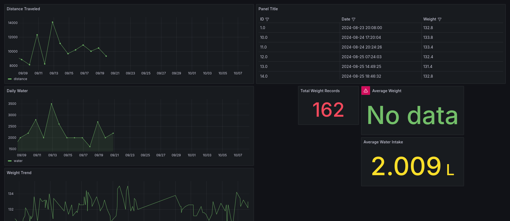

Health Dashboard Project

This project was heavely inspired my Bryan Jenks and his health dashboard. I was inspired to create my own after seeing his and how it turned out.
How does it work?
Each of the different metrics is handled differenty.